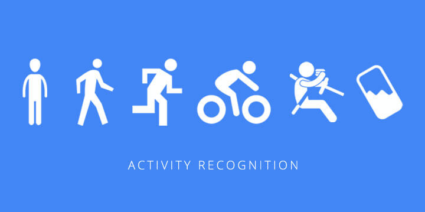

Reducing Commercial
Aviation Fatalities
Can you tell when a pilot is heading for trouble?
It is a multi-class classification Machine learning problem where want to predict the cognitive state of a pilot. The physiological data for the modeling is collected using biological sensors from pilot.
#Python #Sckit_Learn #LightGBM #Biosppy
Cotton Disease
Prediction
_iaip (2).jpg)
This is a cotton disease classification problem, we have used inception-v3 transfer learning network for modeling. The inception model helps us predict whether these images of the leaf/plant belong to the diseased category or the healthy category.
#Python #Keras #Transfer_learning #Flask
Health Insurance
Lead Prediction
We need to cross-sell health insurance to the existing customers who may or may not hold insurance policies with the company. The company recommends health insurance to its customers based on their profile once these customers land on the website.
#Python #Sckit_Learn #CatBoost #XGBoost

This is a NLP model trained on the imdb dataset for movie sentiment analyzing. When a user submits a review the app should use the sklearn model trained on the IMDB dataset to classify the review as positive or negative. web app: link
#Python #Sckit_Learn #Flask #Heroku
Human Activity
Recognition

This project is to build a model that predicts human activities such as Walking, Walking_Upstairs, Walking_Downstairs, Sitting, Standing and Laying. The data is recorded with the help of sensors (accelerometer and Gyroscope) in a smartphone.
#Python #Sckit_Learn #Machine_Learning #LSTM
.jpg)
Flight ticket prices can be something hard to guess. Today we might see a price, tomorrow it will be a different price. As a machine learning problem, we are gonna prove that given the right data anything can be predicted. web app: link
#Python #Regression #Sckit_Learn #Flask #Heroku